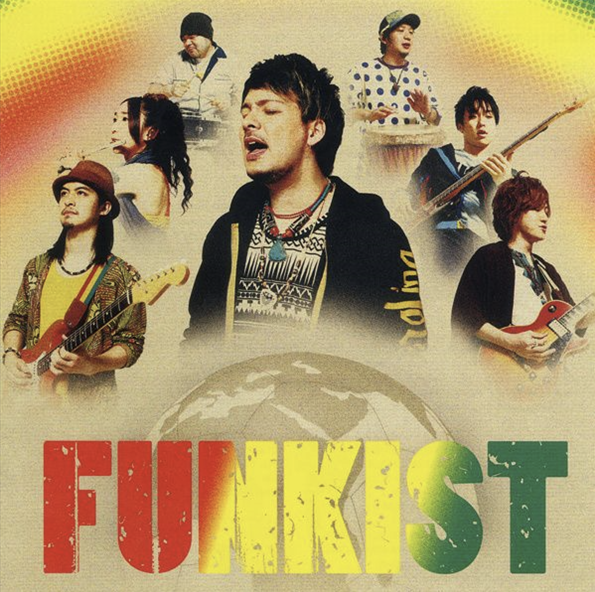
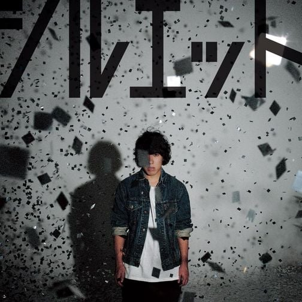

| チグハグ | FT. | シルエット |
嫌なことは嫌と言ってOK
好きなことはとことん突き進んで
僕ら全員天然記念物
なんて、すばらしいじゃん！
チチチグハグ
싫은 일은 싫다고 해도 OK
좋아하는 일은 끝까지 돌진하는 거야
우리들 모두 천연기념물
이라니, 굉장하잖아!
뒤뒤 뒤죽박죽
발랄한 멜로디와 사랑스러우면서도 용기를 주는 가사는 행복한 기운을 마구마구 전달해줘요.
에너지가 충전되는 듯한 노래!

사진을 누르면 이동합니다.
大丈夫 俺が何万回も叫んでやる
君の明日が全て 輝いていると信じてる
夢を叶えた全ての人に 重なり合う共通点
諦めなかったって事 それだけさ負けんなよ!
向かい風に流されくじけそうな時は
この手握れ Try to take a chance もう
君は一人なんかじゃないぜ
괜찮아 내가 수만 번이나 외칠게
너의 내일이 모두 빛나고 있다고 믿어
꿈을 이룬 모든 사람들과 겹치는 공통점
포기하지 않았다는 것. 그것만큼은 잃지 않아!
맞은 편에 흘러 넘칠 것 같은 때는
이 손잡이 Try to take a chance
너는 혼자가 아니야
가사 부터 알 수 있듯, 나에게 용기를 주는 노래!
행복한 날에 들으면 더 기운 넘쳐요.

사진을 누르면 이동합니다.
いっせーのーで 思い出す少年
僕らは何もかもを欲しがった
わかってるって あぁ気づいてるって
時計の針は日々は止まらない
奪って奪って奪ってく
流れる時と記憶
遠く遠く遠くになって
覚えてないことも たくさんあっただろう
하나 둘 셋에 떠올리는 소년
우리들은 뭐든지 갖고 싶어했어
안다니까 아아, 깨달았다니까
시곗바늘은, 나날은 멈추지 않아
빼앗아 빼앗아 빼앗아가
흘러가는 시간과 기억들은
멀리 멀리 멀어져가고
기억 못하는 일도 잔뜩 있었겠지
어린 시절의 열정을 다시 상기시켜 주는 듯한 가사.
활발했던 그 감정을 다시 전달해주는 불타오르는 노래!